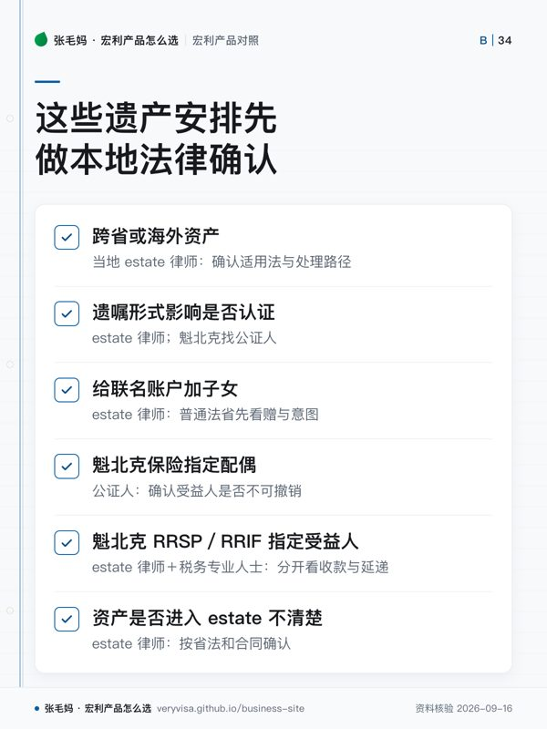

- 没有统一费率认证费按省算，同样金额在各省差一个数量级
- BC$25,000 及以下不收；$25,000–$50,000 部分每 $1,000 收 $6；超过 $50,000 部分每 $1,000 收 $14
- Ontario前 $50,000 为 $0，超过部分每 $1,000 收 $15；$50,000 及以下仍要在 180 天内交 Estate Information Return
- Alberta按 Alberta 境内财产净值分五档，超过 $250,000 为 $525
知识卡
不看正文也能拿到这一页的核心规则：先看导读，再看图。点图放大，左右翻页。
- 先看先定位管辖地区，再判断财产是否穿过遗产。
- 易漏收费高低不能替代法律归属判断。
- 下一步最后才比较现有结构是否需要调整。

- 先看优先识别管辖地、文件类型与所有权安排。
- 易漏民事归属和税务延递可能给出不同答案。
- 下一步任何一项拿不准，都先做当地法律核验。
「买保险／买分离基金可以省遗产认证费」这句话不是错的，但它的价值完全取决于你住哪个省： 在 Alberta 认证费封顶几百元，省下来的那点钱不值得为它改变产品选择； 在 BC 和 Ontario 才是每一百万上万元的量级。
这一页只讲后果和该问谁：先看你所在省的计费基础与费率，再看哪些资产按省法根本不进遗产， 最后才回到产品。个案安排要看遗嘱、资产所在地和家庭结构，得找 estate 律师。
写了受益人不等于没有税——注册账户那一侧见注册账户在身故时怎么处理； 寿险受益人写「遗产」还是写人，见寿险的钱在税上怎么走。
一句话
Probate 是省里的事，没有「加拿大统一费率」：同样 $1,000,000 进入认证，BC 约一万三、Ontario 约一万四、Alberta 封顶几百元、Quebec 公证遗嘱根本不走认证——所以「买保险／分离基金省 probate」这句话值多少钱，先问你住哪个省。
事实清单
- BC：Probate Fee Act 的计费基础是死亡时转到遗产代理人手里的财产毛值（BC 境内的不动产与有形动产，死者通常居住在 BC 的再加上各地的无形财产）；$25,000 及以下不收，$25,000–$50,000 部分每 $1,000（不足按 $1,000）收 $6，超过 $50,000 部分每 $1,000 收 $14。✅源
- BC：WESA 把 RRSP、RRIF、TFSA 和年金安排列为 benefit plan，有效指定受益人时该死亡给付不属于 estate；保险合同另归 Insurance Act 管。✅源
- Ontario：2020-01-01 起申请 estate certificate 的，Estate Administration Tax 在 estate 价值 $50,000 及以下不交（仍要在 180 天内交 Estate Information Return），超过时前 $50,000 为 $0，超过部分每 $1,000（不足 $1,000 按 $1,000）收 $15。✅源
- Ontario：官方 EAT 页面列明不计入 estate 价值的资产，包括付给指名受益人的寿险、真正自动归生存共有人的共有财产、省外不动产、有受益人指定的 RRSP／RRIF／TFSA 等。✅源
- Ontario：Small Estate Certificate 适用于价值不超过 $150,000 的 estate；是否一定要申请 Certificate of Appointment，取决于资产种类与第三方是否要求授权证明。✅源
- Alberta：签发 grant of probate／administration 的法院费按 Alberta 境内财产净值分五档：$10,000 以下 $35；至 $25,000 为 $135；至 $125,000 为 $275；至 $250,000 为 $400；超过 $250,000 为 $525。✅源
- Quebec：公证遗嘱（notarial will）不需要 probate；亲笔遗嘱和见证遗嘱死后必须经公证人或 Superior Court 验证。✅源
- Quebec：投保人或参与人在遗嘱以外的书面文件里把已婚／民事结合配偶指定为受益人，除非另有约定，不可撤销；指定其他人则可撤销（Civil Code art. 2449）。✅源
- Quebec：配偶或前配偶（含已婚、民事结合、事实婚姻）是唯一共同持有人的活期存款账户，一方死亡后金融机构按书面声明的份额付款，没有声明就各一半。✅源
- Quebec：CRA 明确魁北克不承认 TFSA 的 successor holder 指定，存款型与信托型 TFSA 的受益人指定也不被承认。✅源
- New Brunswick：2026-06-12 起提交的 probate 申请适用新 probate tax：$20,000 以下 $200；$20,000–$100,000 部分每 $1,000 收 $5；超过 $100,000 部分每 $1,000 收 $15（官方计算器按 $200 基础费加各段累计）。✅源
- Manitoba：2020 年预算宣布自 2020-07-01 取消全部 probate fee ✅源；实际生效以法院公告为准：2020-11-06 起《Law Fees and Probate Charge Act》改名《Court Services Fees Act》，probate／administration 申请的 probate charge 取消，11-05 及以前提交的申请仍按旧法补收或退还。✅源 省政府现行法院收费表的 Probate 栏仍有按件收费（如 Notice of Application $250、Caveat $30）。✅源
- 联名账户：最高法院 Pecore 案（Ontario 上诉案）认为，父母无偿把资产放进与成年子女的联名账户时，适用 resulting trust 推定——子女要证明有赠与意图，否则视为替父母代持；该推定可被证据推翻（该案父亲的赠与意图被认定成立）。「名字在上面」不等于钱归子女。✅源
各省并排看
口径：假设整笔金额都进入该省认证计费基础，只算法定费／税，不含律师、公证、估值和其他法院费；Quebec 制度不同，不硬凑百分比。
| 省 | 费用框架 | 按 50 万元算 | 按 100 万元算 | 注册账户指定受益人 | 最容易讲错 |
|---|---|---|---|---|---|
| BC | 分段 $6／$14 每千元 ✅源 | $6,450 | $13,450 | WESA 认 ✅源 | 计费基础只算进入代理人手里的资产 |
| Ontario | 超 $50,000 部分每千元 $15 ✅源 | $6,750 | $14,250 | SLRA Part III 认，TFSA 列为规定计划 ✅源 | 官方排除清单只适用 Ontario |
| Alberta | 按净值五档，最高 $525 ✅源 | $525 | $525 | Wills and Succession Act s.71 可指定（RRSP／RRIF／TFSA）✅源 | 为省几百元改结构，得不偿失 |
| Quebec | 公证遗嘱免验证；其他遗嘱要验证 ✅源 | 按路径计费 | 按路径计费 | TFSA 的 successor holder 与存款型／信托型受益人指定不被承认 ✅源 | 「魁北克没有 probate」 |
| New Brunswick | $200 起，分段 $5／$15 每千元 ✅源 | $6,600 | $14,100 | 按省法另查 | 2026-06-12 前后费率不同 ✅源 |
表中「按 50 万元算」「按 100 万元算」两列是按各行官方费率表手算的比较值，不是政府报价。
税务后果
- Probate 费和所得税是两本账：有受益人指定的 RRSP／RRIF／TFSA 不计入 Ontario EAT 的 estate 价值 ✅源，但 RRSP 死亡日 FMV 照样计入死者税表 ✅源；进 estate 也不一定按价值收费（Ontario $50,000 及以下不交 EAT）。✅源
- BC Insurance Act 规定：人寿保险指定了受益人的，保险金自给付事件发生起不属于被保险人的 estate、不受其债权人追索；把受益人写成「estate」「heirs」等，视为指定遗产代理人。✅源
- 魁北克 RRSP／RRIF：CRA 写明合同或遗嘱中的受益人指定除有限情形外无效；但遗嘱把全部 RRSP／RRIF 款项给配偶且满足其他条件时，CRA 仍接受按配偶路径的简式申报——「谁在法律上收钱」和「税上能不能延」要分开问。✅源
- 以主管机构原文与持牌意见为准，本文不对任何个案下结论；跨省或海外资产、遗嘱形式、婚姻制度都会改变路径，动任何结构前先让当地 estate 律师（魁北克为公证人）确认。
常见误区
- 「加拿大 probate 是 1.4%／1.5%」——那只是 BC ✅源、Ontario ✅源 超出起征段部分的每千元费率（NB 2026-06-12 起超过 $100,000 部分也是 $15），Alberta 最高 $525，Quebec 公证遗嘱不走认证。✅源
- 「分离基金在加拿大一定不用 probate」——要看合同、有效受益人和省法；以萨省法院页为例，写明不需 probate、不计 probate fee 的是付给指名受益人的寿险和 RRSP／RRIF，页上没有单列分离基金。✅源
- 「联名账户加孩子名字就能省 probate」——普通法省份要过 Pecore 的赠与意图关，魁北克配偶联名活期账户又是按声明份额、默认各半。✅源
- 「Quebec 没有 probate」——亲笔和见证遗嘱必须验证。✅源
- 「保险受益人随时都能改」——魁北克非遗嘱文件指定配偶默认不可撤销。✅源
- 「所有 TFSA 都能指定 successor holder」——魁北克不承认。✅源
- 「Quebec 同居伴侣永远不能继承」——无遗嘱时，已婚、民事结合或 parental union 的配偶可以继承；事实婚姻（de facto）配偶不能。✅源
事实来源
该问经纪的问题（抄下来直接问）
- 我住的省、房产所在的省（或国家）分别是哪里？把哪些资产会进 estate 列一张清单，请当地 estate 律师告诉我认证费大约多少、要多久。
- 我的保险、分离基金、RRSP／TFSA 现在的受益人指定，在我这个省是否有效、是否可撤销？请保险经纪调出合同指定页，再请律师核。
- 如果只为省 probate 而改结构（加联名、换保险外壳），省下的钱和多付的费用、失去的控制权相比值不值？请经纪给出多付的年费数字，再和本页的认证费比。
- 这一页的数字核对日期是哪天？到我签字那天，哪几个会变？
- 同样的需求，除了这个产品还有哪些选择，为什么你不建议那几个？
去论坛讨论
音视频与笔记本
- nb-tax-estate
本页是公开资料的整理与对照，不是官方文件，也不构成针对你个人情况的保险、投资或税务建议。产品条款、利率与费用以机构当期官方文件为准；税务处理以主管机构原文与持牌专业意见为准。数字会变，看到本页请对一眼「核对日期」。